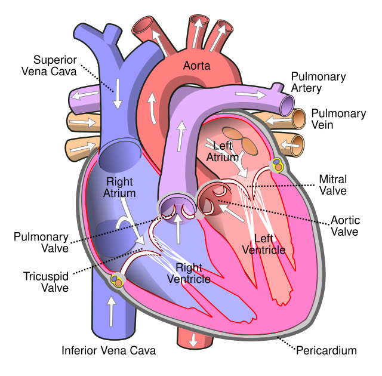

Left Atrium
The left atrium is one of the four chambers of the heart, and its primary function is to receive oxygen-rich blood from the lungs and pump it into the left ventricle, which then distributes the oxygenated blood to the rest of the body.
Here’s a detailed look at the structure, function, and working process of the left atrium:

Anatomy of the Left Atrium
- Location: Upper left side of the heart.
- Shape and Structure: Smaller and thicker-walled than right atrium.
- Pulmonary Veins: Four veins bring oxygenated blood into the left atrium.
- Mitral Valve: Regulates flow into the left ventricle.
Function of the Left Atrium
- 1. Receives oxygenated blood from lungs.
- 2. Fills during diastole (relaxation phase).
- 3. Sends blood to left ventricle via mitral valve.
- 4. Contracts to push remaining blood down.
- 5. Valve closes to prevent backflow.
The left ventricle then pumps the blood through the aorta to the body.
Importance in Circulation
Oxygen Supply: Ensures fresh blood flows into the left ventricle.
Pressure Management: Thick walls handle blood from lungs efficiently.
Clinical Conditions
Atrial Fibrillation:
Causes irregular heartbeat, clots, and strokes.
Valve Regurgitation:
Improper valve closure causes backflow.
Enlargement:
Due to hypertension or valve issues.
Pulmonary Hypertension:
Strains left atrium, may lead to heart failure.
Summary
The left atrium receives oxygen-rich blood from the lungs and sends it into the left ventricle for body circulation. Its proper function is essential for efficient oxygen supply throughout the body.